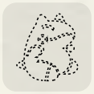
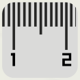
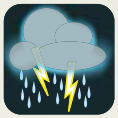

招式條目裡有許多圖示，用來提示招式的目標、類別，最重要的是效果。大部分招式圖示一看就懂，能幫你快速又可靠地掌握這些資訊。
除了目標、專用招式、先制反應／後制反應和其他特定效果之外，大多數效果都在招式的結算時間點發揮作用。也就是說，只要招式命中，不論有沒有造成傷害，效果都會生效。
請務必仔細閱讀每一條，了解招式如何運作。
注意招式的效果。學會組合它們，就是勝利的關鍵。
接下來列出招式與特性上的所有效果圖示。各圖示的完整規則都已在額外效果說明，這裡只是提醒。
類別圖示#
物理以防禦抵抗。這類攻擊依靠有形的物體或材料造成傷害，例如身體部位或環境中的物質。絕大多數物理招式都會直接接觸目標，除非明確標示為「遠程」，代表是射出實體物品。
特殊以特防抵抗，一律視為遠程。這類招式依靠能量而不是有形物質，所以使用者永遠不需要接觸敵人。
變化不造成傷害的招式，也就是不會直接造成任何傷害。不能用來對抗，也不能被對抗。用途多變、效果有趣，很適合擬定蠻力以外的戰術。
標示為物理或特殊的招式視為傷害招式，是遊戲中主要的傷害來源。
目標#
目標是可能承受招式的對象。戰場上的所有人，甚至戰場本身，都可能成為目標，只要招式的目標圖示有標明。
單體目標只以一個角色為目標，通常是敵人。
隨機敵人敵人超過一個時，隨機選一個為目標。
範圍內所有敵人以你的階級允許的任意數量敵人為目標。
使用者以使用者自己為目標的招式。
一名隊友以己方一名隊友為目標。
使用者與範圍內的隊友以你自己和你的階級允許數量的隊友為目標。
範圍招式沒有特定目標，範圍內的所有人都會受影響，包括隊友。
整個戰場以整個戰場為目標，包括己方和敵方。
己方場地只以己方場地為目標。
敵方場地只以敵方場地為目標。
選擇目標的規則#
- 你可以用單體目標的招式指定隊友，不過很少有用。
- 你不能用以「一名隊友」或「單體目標」為目標的招式指定自己。
- 敵方以自己、隊友或己方場地為目標的招式，無法被閃避或對抗。
- 以戰場為目標的招式無法被閃避或對抗。
- 範圍招式只能被另一個範圍招式對抗。
永遠生效／絕不生效#
永遠生效效果有這個圖示時，會自動生效。
絕不生效效果有這個圖示時，絕對不會生效。
提升和降低#
能力值或副能力值的增加或減少。箭頭向上代表提升，箭頭向下代表降低。「X」代表調整的點數。
藍色圖示調整使用者的能力值／副能力值。
紅色圖示調整敵人的能力值／副能力值。
阻擋#
阻擋被阻擋的目標無法逃離戰鬥、無法被替換下場，也不受替換招式影響。
機率骰#
為了觸發額外效果而骰的骰子。只要其中至少一顆骰出 6，效果就會發生。
機率骰 X「X」代表機率骰的數量。通常放在效果的右側，或是放在異常狀態的方框裡。
範例左邊是骰 5 顆機率骰來提升 1 點防禦；右邊是骰 2 顆機率骰來造成 1 級灼傷。
蓄力招式#
蓄力招式需要兩個回合，因此也需要使用兩個行動。第一個行動用來蓄力，第二個行動才使出招式。
複製招式#
複製招式成為另一個招式複製品的招式。複製出的招式有相同的類別、威力和額外效果，唯一的差別在命中骰。可以從一個目標複製招式，再轉向另一個目標。
傷害調整與固定傷害#
傷害調整滿足特定條件時，增加或減少傷害骰池的骰子。「X」代表增加或減少的骰數。
固定傷害直接造成固定數量的傷害，無視防禦。
持續時間#
招式的效果在戰鬥中持續多久。
持續 X 輪持續標示的戰鬥輪數。
持續整個場景持續到這個場景結束。
入場危害#
入場危害設置在敵方場地的危害或陷阱，每當該方有寶可夢上場就會觸發。
防護力場#
防護力場留在使用者場地的力場，減少該側受到的某一類別的傷害。
治療招式#
這些招式能治療寶可夢的傷害，但需要消耗意志點才能發動效果。
基礎治療
強效治療
定額治療
高要害率#
高要害率減少擊中要害所需的成功數。
致命傷害#
致命傷害使用致命傷害可選規則時，這些招式可以直接造成這類傷害。
低命中率招式#
低命中率從招式自己的命中骰扣除成功數。
使用……的招式#
這些招式使用特定的技巧，會和某些特性互動。
啃咬類招式
切割類招式
拳類招式
投彈類招式
風類招式
重新充能招式#
重新充能成功命中後，使用者必須用下一個戰鬥輪的第一個回合重新充能。這個效果可以和自身疊加。
必中招式#
必中有這個圖示的招式無法被閃避。
持續傷害#
持續傷害在一段時間內持續造成傷害，每個戰鬥輪結束時對目標造成 2 顆骰的無屬性傷害。
範圍外#

範圍外招式讓使用者離開戰場，大多數招式都無法以牠為目標。
粉末類招式#
粉末類招式依靠粉末和孢子發揮效果。草屬性寶可夢對這類招式免疫。
狂暴#
狂暴寶可夢進入狂暴，可以連續三個行動重複這個招式。狂暴結束後，使用者會陷入混亂。
遠程招式#

遠程物理招式通常要直接接觸目標才能造成傷害。遠程招式是從遠處造成傷害的物理招式，因此不會觸發某些效果或特性。
先制反應和後制反應#
有這些圖示的招式可以在別人的回合作為反應使用。先制反應在該回合的行動之前結算，後制反應在之後結算。有反應圖示的招式不一定要當作反應使用。
先制反應箭頭向上。
後制反應箭頭向下。
反作用傷害#
反作用傷害使用者會被自己的招式傷害。先正常對敵人骰傷害，然後再骰一次，把得到的每個成功數都當作對使用者的傷害，無視防禦。
聲音類招式#
聲音類招式聲音類招式能穿過目標的替身、防護力場和掩護。
護盾招式#
護盾招式保護使用者免受攻擊，但每個戰鬥輪都使用時命中率會降低。
異常狀態#
招式可能直接造成異常狀態，或透過機率骰造成。
異常狀態圖示方框裡的狀態就是招式可能造成的效果；有骰子圖示的要骰機率骰，有打勾圖示的會直接生效。
連續行動#
可以在同一回合使用多次的招式。
雙重行動
三重行動
連續行動
替換招式#
替換招式把使用者或敵人收回精靈球，由隊友上場取代。
專用招式#
專用招式專用招式無法被其他招式或特性複製、替換、無視或覆蓋。
易傷#
易傷這些招式會讓使用者更容易受到某些來源的傷害。
天氣狀態#
有些招式可以召喚或改變戰場上的天氣狀態。所有天氣都會和特定的招式、屬性與特性互動，詳情請看天氣狀態。
可以由招式召喚的天氣：
大晴天
下雨
冰雹
下雪
沙暴
只能由特性召喚的天氣：
大日照

大雨
亂流